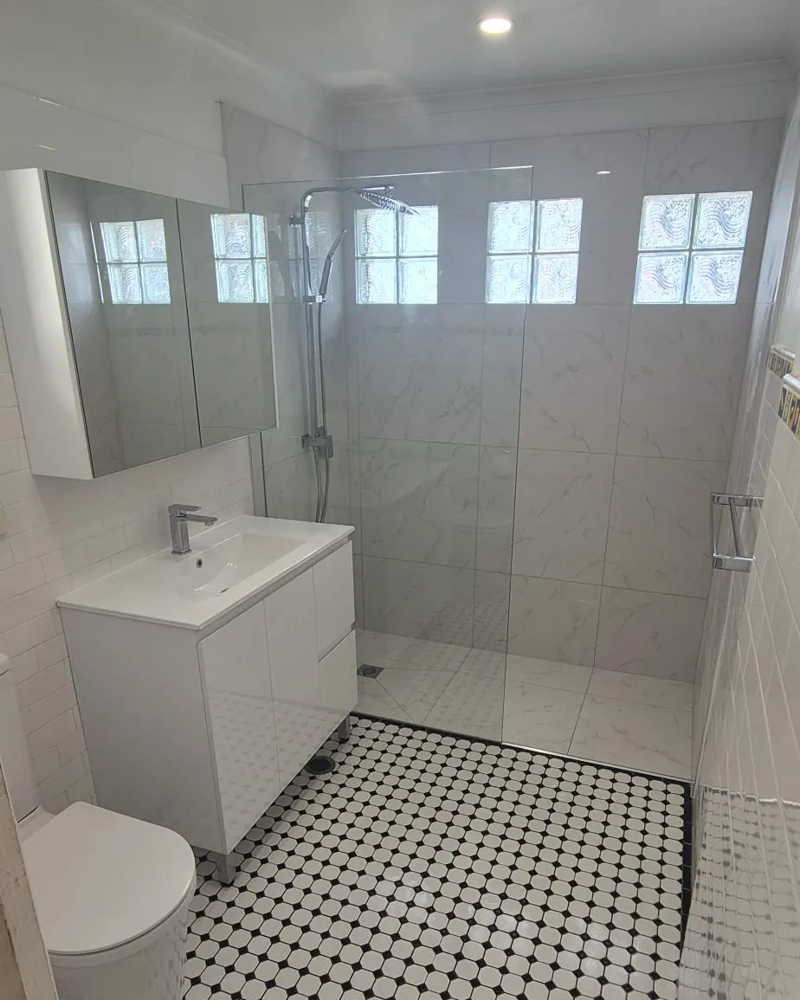

- Home
- Leaking Showers
Leaking shower repairs in Sydney
A leaking shower rarely fixes itself, and the longer it goes, the more damage it can do to walls, floors and framing. We find where the water is getting through, remove what's failed and rebuild with new waterproofing, so the problem is solved rather than covered up.
Fixed properly, not patched over
Re-grouting or re-sealing can sometimes hide a leak for a while, but if the waterproof membrane underneath has failed, water will keep finding its way through.
We'll be upfront about what's causing your leak and the right way to fix it, then do the work to a standard you won't need to think about again.
Get a Quote- Inspection & diagnosisWe assess the shower, surrounding walls and floor to understand where water is escaping.
- Honest adviceA clear explanation of what's failed and the options to fix it, with a fixed, itemised quote.
- Strip-out of failed areasRemoval of tiles, bedding and the old membrane back to a sound substrate.
- Re-waterproofingA new waterproofing system installed, including corners, junctions and penetrations.
- Retiling & screenNew tiles laid with correct falls to the waste, then the screen and fixtures refitted or replaced.
- Making goodDamaged adjacent areas (skirting, walls or flooring) repaired where needed so the finish is complete.
Signs your shower is leaking
Leaks often start small and out of sight. If you notice any of these signs, it's worth having your shower checked sooner rather than later.
Loose or drummy tiles
Tiles that sound hollow when tapped, move, crack or lift, especially on the shower floor.
Cracked or missing grout
Grout that keeps crumbling, discolouring or cracking, even after it's been redone.
Mould & mildew
Persistent mould at the base of walls or in corners that returns soon after cleaning.
Stains on nearby walls
Bubbling paint, water stains or damp patches on the other side of the shower wall.
Swollen skirting or flooring
Timber skirting, door frames, carpet or floorboards near the bathroom swelling or rotting.
Musty smell
A damp, musty odour in or around the bathroom that won't go away.

The problem is usually under the tiles
In older bathrooms the waterproof membrane can break down over time, particularly at the junctions between walls and floor, around the waste and at the shower hob. Movement, poor falls and failed seals all add to the problem.
Once water gets past the membrane, it can travel into walls, subfloors and neighbouring rooms. Rebuilding the shower with a new waterproofing system is the reliable long-term fix, and a chance to modernise the shower at the same time.
Book a Free QuoteHow we fix a leaking shower
Here's how we deal with a leaking shower, step by step.
1. Inspect
We check the shower, waste, junctions and surrounding areas for signs of water escaping.
2. Explain & quote
You'll get a clear explanation of the cause and a fixed, itemised quote to fix it properly.
3. Rebuild
Failed areas removed, new waterproofing applied, then retiled with correct falls.
4. Test & finish
Water-tested, sealed, cleaned and back in use, with nearby damage made good.

“They kept us updated every step and kept the mess to a minimum. The waterproofing and tiling are excellent, and the price matched the quote exactly.”
Frequently Asked Questions
Can a leaking shower be fixed without removing the tiles?
Sometimes a failed silicone joint or a damaged grout line is the culprit, and that can be repaired without retiling. But if the waterproof membrane underneath has failed, re-grouting or sealing over the top usually only delays the problem.
We'll tell you honestly what's going on and what will actually fix it.
How do I know if my shower is leaking?
Common signs include loose or drummy tiles, cracked grout, recurring mould, stains or bubbling paint on nearby walls, swollen skirting boards and a musty smell. If you notice any of these, it's worth getting it checked.
Is a leaking shower urgent?
It's best not to wait. Ongoing leaks can damage wall framing, subfloors and neighbouring rooms, and the cost of repair generally grows the longer water is getting through.
Can you upgrade the shower while fixing the leak?
Absolutely. Because the shower is being rebuilt anyway, it's a great time to switch to a frameless screen, add a niche, change tiles or upgrade tapware.